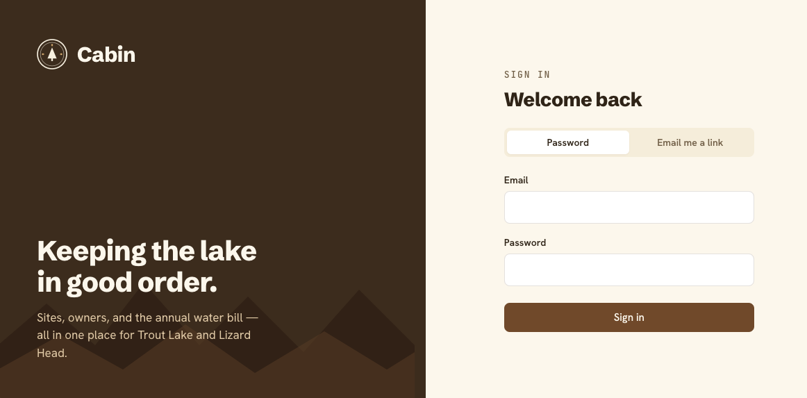

01 · Community admin
Cabin
Runs a small cabin community end to end — lot records, owner accounts, the annual water bill, board governance, and messaging. Each owner also gets a hub for inventory, maintenance, visit requests, and open/close checklists.
Source
Private
app